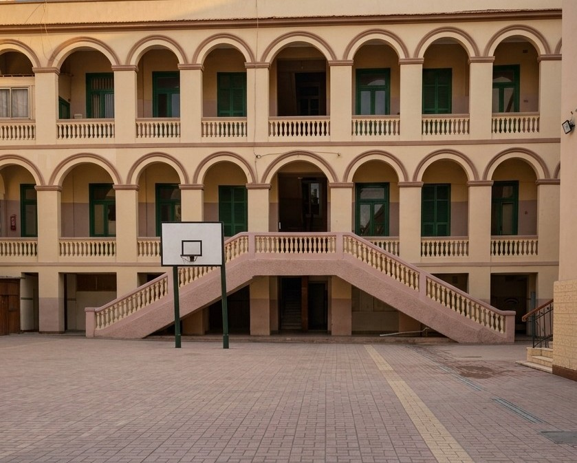

01
Maternelle
Les premiers apprentissages dans un environnement joyeux et sécurisant.
↗
Une école francophone à Héliopolis qui accompagne chaque élève avec exigence, bienveillance et confiance.
DÉCOUVRIRUne histoire qui continue
Depuis 1921, Notre-Dame de la Délivrande accompagne les jeunes filles à Ghamra. Notre histoire est faite de transmission, de service, de rencontres et d'une vision tournée vers l'avenir.
Aujourd'hui, l'école accueille les élèves de la maternelle jusqu'au secondaire, avec le français comme première langue étrangère et une attention particulière portée à l'autonomie et à l'expression de l'enfant.
Découvrir notre histoire ↗
Notre parcours
Une histoire qui commence avec une école et un dispensaire, avant de devenir une communauté éducative profondément ancrée dans le quartier.
Un parcours à chaque âge
Les premiers apprentissages dans un environnement joyeux et sécurisant.
↗
Développer les connaissances, la curiosité et le plaisir d'apprendre.
↗
Grandir en autonomie, en responsabilité et en confiance.
↗
Préparer l'avenir avec ambition, ouverture et solidité académique.
↗
Notre philosophie
Former des jeunes capables de s'exprimer, de penser librement et de contribuer positivement au monde qui les entoure.
Bien plus que des cours

Activités culturelles, sportives, musicales, projets solidaires, sorties et événements rythment la vie de notre communauté.
Voir la vie de l'école ↗Un environnement pour apprendre
 01 · Salles de classe
01 · Salles de classe 02 · Campus
02 · Campus 03 · Espaces d'apprentissage
03 · Espaces d'apprentissage 04 · Salle de gymnastique
04 · Salle de gymnastique


Admissions
Découvrez les conditions d'admission et commencez votre démarche pour rejoindre Notre-Dame de la Délivrande.
Nous trouver
15 Rue El Khartoum
Ghamra, Le Caire
(02) 2415 5192
Ndd@delivrande-ghamra.com